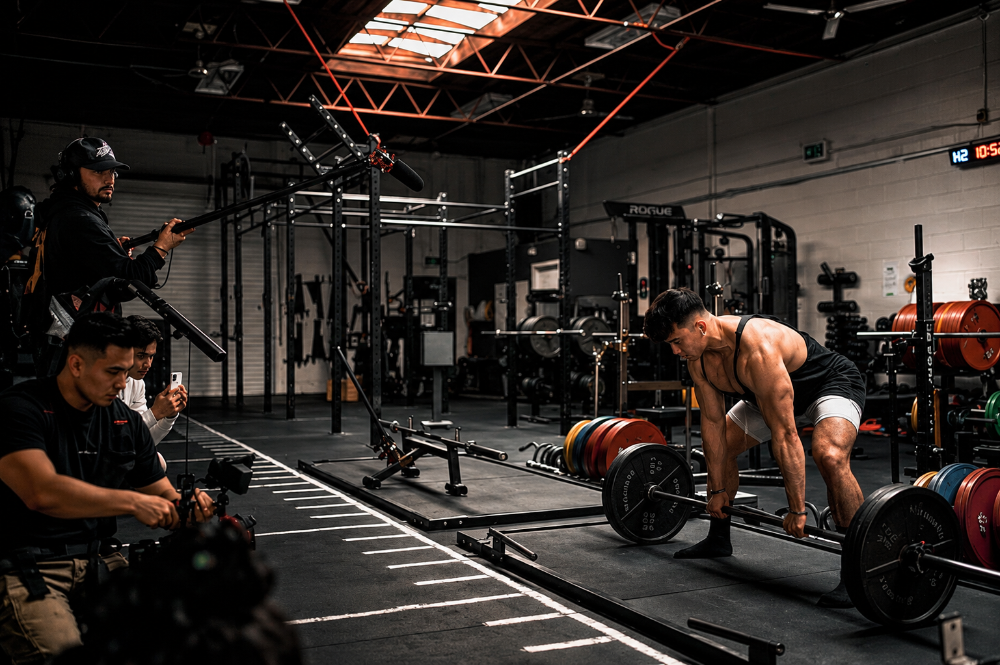

01 / PERSONALIZAÇÃO
Treinos personalizados
Fichas organizadas de acordo com seus objetivos, sua rotina e seu nível de experiência.
Criar meu treino ↗

O personal digital que adapta o treino à sua rotina, considera suas limitações e ajuda você a buscar uma prática de exercícios mais segura.
Criar meu treino ↗Ferramentas para ajudar você a treinar de forma mais consciente, organizada e personalizada.
Fichas organizadas de acordo com seus objetivos, sua rotina e seu nível de experiência.
Criar meu treino ↗Conheça suas limitações e encontre orientações para uma prática de exercícios mais segura.
Conhecer o projeto ↗Organize sua rotina de exercícios e construa hábitos consistentes para progredir.
Ver minhas fichas ↗Movimento com
mais consciência.
O LesioRadar é uma plataforma digital voltada à organização dos treinos e à prevenção de lesões em praticantes de atividades físicas.
O projeto busca auxiliar atletas e praticantes recreativos com orientações personalizadas, levando em consideração seus objetivos e suas limitações. A proposta é aproximar a tecnologia do conhecimento esportivo e incentivar práticas físicas mais conscientes e acessíveis.
Começar agora ↗Suas fichas aparecerão aqui após você responder ao questionário.